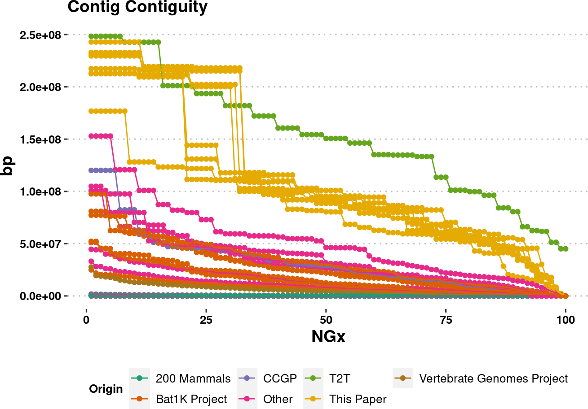
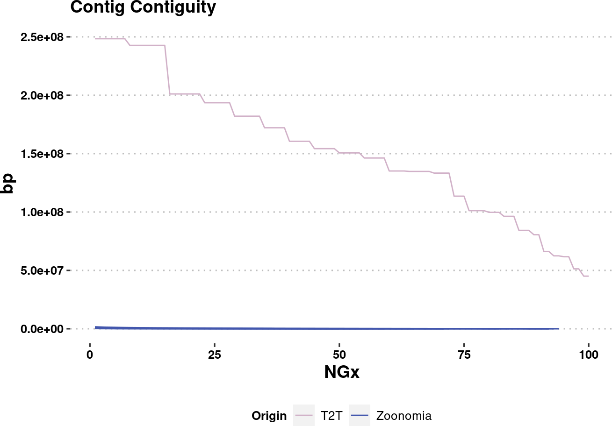
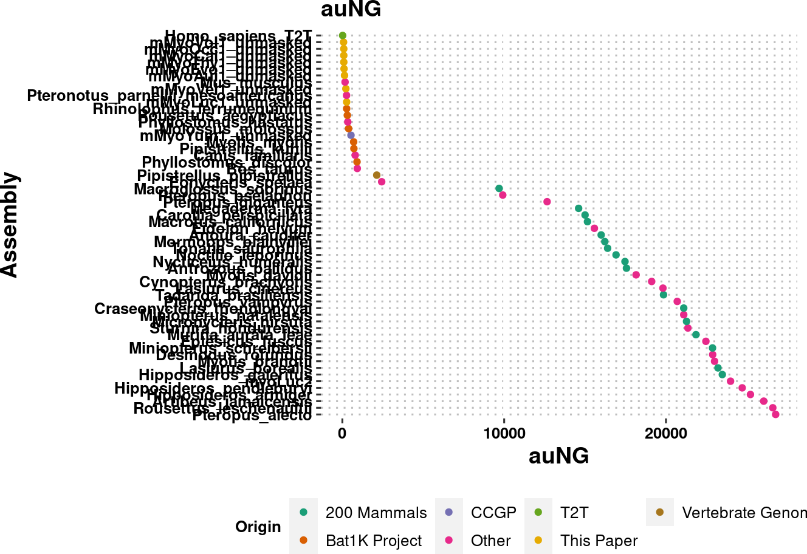
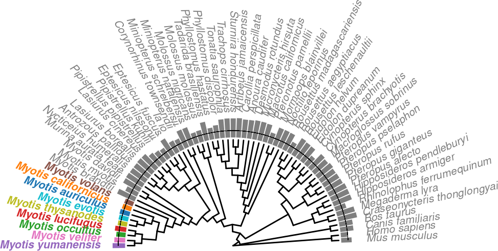

QC Plots
Juan Manuel Vazquez
6/27/2022
Last updated: 2024-01-08
Checks: 7 0
Knit directory: R_workflowr/analysis/
This reproducible R Markdown analysis was created with workflowr (version 1.7.1). The Checks tab describes the reproducibility checks that were applied when the results were created. The Past versions tab lists the development history.
Great! Since the R Markdown file has been committed to the Git repository, you know the exact version of the code that produced these results.
Great job! The global environment was empty. Objects defined in the global environment can affect the analysis in your R Markdown file in unknown ways. For reproduciblity it’s best to always run the code in an empty environment.
The command set.seed(20230501) was run prior to running
the code in the R Markdown file. Setting a seed ensures that any results
that rely on randomness, e.g. subsampling or permutations, are
reproducible.
Great job! Recording the operating system, R version, and package versions is critical for reproducibility.
Nice! There were no cached chunks for this analysis, so you can be confident that you successfully produced the results during this run.
Great job! Using relative paths to the files within your workflowr project makes it easier to run your code on other machines.
Great! You are using Git for version control. Tracking code development and connecting the code version to the results is critical for reproducibility.
The results in this page were generated with repository version 9d4271f. See the Past versions tab to see a history of the changes made to the R Markdown and HTML files.
Note that you need to be careful to ensure that all relevant files for
the analysis have been committed to Git prior to generating the results
(you can use wflow_publish or
wflow_git_commit). workflowr only checks the R Markdown
file, but you know if there are other scripts or data files that it
depends on. Below is the status of the Git repository when the results
were generated:
Ignored files:
Ignored: R_workflowr/.RData
Ignored: R_workflowr/.Rproj.user/
Ignored: R_workflowr/analysis/figure/
Ignored: R_workflowr/data/
Ignored: R_workflowr/output/pubFiles/
Ignored: R_workflowr/output/webGestalt/
Ignored: R_workflowr/renv/library/
Ignored: R_workflowr/renv/staging/
Ignored: R_workflowr/test.phy
Note that any generated files, e.g. HTML, png, CSS, etc., are not included in this status report because it is ok for generated content to have uncommitted changes.
These are the previous versions of the repository in which changes were
made to the R Markdown (R_workflowr/analysis/ng_curves.Rmd)
and HTML (R_workflowr/docs/ng_curves.html) files. If you’ve
configured a remote Git repository (see ?wflow_git_remote),
click on the hyperlinks in the table below to view the files as they
were in that past version.
| File | Version | Author | Date | Message |
|---|---|---|---|---|
| Rmd | 6f1b440 | docmanny | 2023-12-27 | PANCOVA |
| html | d0ca892 | docmanny | 2023-12-22 | wflow_build works |
| Rmd | 8f66d05 | docmanny | 2023-12-21 | clean version of Fig 1, now with LQ |
| Rmd | 3d9fd9c | docmanny | 2023-12-15 | draft sub figs for F1&2 |
| html | 3d9fd9c | docmanny | 2023-12-15 | draft sub figs for F1&2 |
| Rmd | 89c89e6 | docmanny | 2023-05-12 | reorg |
| Rmd | 0408a6b | docmanny | 2023-05-09 | Figure 1 work |
| Rmd | 130db92 | docmanny | 2023-05-09 | workflowr::wflow_git_commit(all = T) |
| html | 5848dd7 | Juan M Vazquez (docmanny) | 2023-01-31 | Adding workflowr |
| Rmd | ca07528 | Juan M Vazquez (docmanny) | 2023-01-31 | wflow_git_commit(".") |
Assembly Stats
our_genomes = c(
"Myotis_auriculus",
"Myotis_californicus",
"Myotis_occultus",
"Myotis_lucifugus",
"Myotis_yumanensis",
"Myotis_volans",
"Myotis_velifer",
"Myotis_evotis",
"Myotis_thysanodes"
)assembly_stats <- read_tsv("../data/assembly_stats/all_assembly_stats.contigs.tsv", col_names = c("genomeName", "stat", "v1", "v2")) %>%
mutate(contig = str_detect(genomeName, "contig")) %>%
filter(str_detect(genomeName, "M_|mmyo|\\.chr", negate=T)) %>%
filter(str_detect(genomeName, "mMyo.+1(?!_unmasked)", negate=T)) %>%
separate(genomeName, c("name", "scaffold"), sep="\\.") %>%
arrange(name, contig) %>%
select(-scaffold) %>%
mutate(name=name %>% str_remove("_unmasked"))assembly_stats <- read_tsv('../data/assembly_stats/all_assembly_stats.cleaned.tsv')Rows: 30552 Columns: 5
── Column specification ────────────────────────────────────────────────────────
Delimiter: "\t"
chr (2): name, stat
dbl (2): v1, v2
lgl (1): contig
ℹ Use `spec()` to retrieve the full column specification for this data.
ℹ Specify the column types or set `show_col_types = FALSE` to quiet this message.meta <- read_tsv("../data/chiropteraGenomes-20230427.tsv") %>%
mutate(`Organism Name` = `Organism Name` %>% str_replace_all(" ", "_"))Rows: 52 Columns: 33
── Column specification ────────────────────────────────────────────────────────
Delimiter: "\t"
chr (19): Assembly Accession, Assembly Name, Organism Name, Organism Infrasp...
dbl (12): Assembly Stats Total Sequence Length, Assembly Stats Contig N50, A...
lgl (2): Organism Infraspecific Names Strain, Organism Infraspecific Names ...
ℹ Use `spec()` to retrieve the full column specification for this data.
ℹ Specify the column types or set `show_col_types = FALSE` to quiet this message.meta.origin <- meta %>%
select(name=`Organism Name`, Origin=Group, Citation) %>%
group_by(name) %>%
mutate(
Origin = ifelse(Origin %in% c('Zoonomia', 'Bat1K', 'DNAZoo', 'CCGP'), Origin, 'Other')
) %>%
bind_rows(assembly_stats %>% filter(str_detect(name, "mMyo")) %>% select(name) %>% distinct %>% mutate(Origin="This Paper", Citation = "This Paper", name = name %>% str_remove("_unmasked")))
assembly_stats.meta <- assembly_stats %>%
left_join(meta.origin, by="name") %>%
replace_na(list(Origin="Other"))%>% mutate(
species = name %>%
str_replace("mMyoAui.*", "Myotis_auriculus") %>%
str_replace("mMyoCai.*", "Myotis_californicus") %>%
str_replace("mMyoOcc.*", "Myotis_occultus") %>%
str_replace("mMyoLuc.*", "Myotis_lucifugus") %>%
str_replace("mMyoYum.*", "Myotis_yumanensis") %>%
str_replace("mMyoVol.*", "Myotis_volans") %>%
str_replace("mMyoVel.*", "Myotis_velifer") %>%
str_replace("mMyoEvo.*", "Myotis_evotis") %>%
str_replace("mMyoThy.*", "Myotis_thysanodes") %>%
str_replace("_T2T","") %>%
str_replace("myoLuc2", "Myotis_lucifugus")
)
assembly_stats.meta[str_detect(assembly_stats.meta$name, "T2T"),"Origin"] <- "T2T"Table
table.auNG <- assembly_stats.meta %>%
filter(stat=='auNG') %>%
arrange(v2) %>%
mutate(v2=scales::label_comma()(v2),
species= species %>% str_replace_all('_', " ")) %>%
select(-v1, -contig, -Citation, -name) %>%
select(Species=species, everything()) %>%
dplyr::rename(auNG='v2')
table.LG50 <- assembly_stats.meta %>%
filter(stat=='LGx', v1==50) %>%
arrange(v2) %>%
mutate(v2=scales::label_comma()(v2),
species= species %>% str_replace_all('_', " ")) %>%
select(-v1, -contig, -Citation, -name) %>%
select(Species=species, everything()) %>%
dplyr::rename(LG50='v2')
table.NG50 <- assembly_stats.meta %>%
filter(stat=='NGx', v1==50) %>%
arrange(desc(v2)) %>%
mutate(v2=scales::label_comma()(v2),
species= species %>% str_replace_all('_', " ")) %>%
select(-v1, -contig, -Citation, -name) %>%
select(Species=species, everything()) %>%
dplyr::rename(NG50='v2')
## TODO:
# table.NScaff <- assembly_stats.meta %>%
# filter(stat=='N', v1=='Scaffold') %>%
# arrange(desc(v2)) %>%
# mutate(v2=scales::label_comma()(v2),
# species= species %>% str_replace_all('_', " ")) %>%
# select(-v1, -contig, -Citation, -name) %>%
# select(species, everything()) %>%
# dplyr::rename(Scaffolds='v2')
# table.NGap <- assembly_stats.meta %>%
# filter(stat=='N', v1=='Gap') %>%
# arrange(desc(v2)) %>%
# mutate(v2=scales::label_comma()(v2),
# species= species %>% str_replace_all('_', " ")) %>%
# select(-v1, -contig, -Citation, -name) %>%
# select(species, everything()) %>%
# dplyr::rename(Gaps='v2')
# table.NST2T <- assembly_stats.meta %>%
# filter(stat=='N', v1=='Scaffolds_T2T') %>%
# arrange(desc(v2)) %>%
# mutate(v2=scales::label_comma()(v2),
# species= species %>% str_replace_all('_', " ")) %>%
# select(-v1, -contig, -Citation, -name) %>%
# select(species, everything()) %>%
# dplyr::rename(Scaffolds_T2T='v2')
# table.NCT2T <- assembly_stats.meta %>%
# arrange(desc(v2)) %>%
# mutate(v2=scales::label_comma()(v2),
# species= species %>% str_replace_all('_', " ")) %>%
# select(-v1, -contig, -Citation, -name) %>%
# select(species, everything()) %>%
# dplyr::rename(Complete_Scaffolds='v2')
table.stats <- table.auNG %>%
# full_join(table.NScaff) %>%
# full_join(table.NGap) %>%
# full_join(table.NST2T) %>%
# full_join(table.NCT2T) %>%
full_join(table.NG50) %>%
full_join(table.LG50)Joining with `by = join_by(Species, stat, Origin)`
Joining with `by = join_by(Species, stat, Origin)`Notes about the tree
In order to get TimeTree to play nicely with the phylogeny, a few changes were needed: - Murina aurata feae (replaced with Murina aurata) - Pteropus pselaphon (replaced with Pteropus mariannus) - Miniopterus schreibersii (replace with Miniopterus schreibersii orianae) - Myotis occultus (replaced with Myotis lucifugus lucifugus) - Myotis lucifugus (replaced with Myotis lucifugus carissima) - Hipposideros pendleburyi (replaced with Hipposideros turpis) - TimetreeV5 has split Eptesicus and broken its nomenclature/link to NCBI, so you can’t find “Eptesicus fuscus” anymore. Instead, you have to look for all of Chiroptera or Vespertilliodinae and then look for Eptesicus fuscus hispaniolae.
If you do all these changes, then undo the changes in post, you get this tree. Note that it was very annoying to splice the two trees together by eye so avoid needing to redo this.
tr <- treeio::read.newick("../data/trees/TimeTree.org/genomeSpecies.timetree.nwk")
# setdiff(tr$tip.label, assembly_stats.meta$species)
# setdiff(assembly_stats.meta$species, tr$tip.label)NGx curves
plot.NGx <- assembly_stats.meta %>%
filter(stat == "NGx",
contig==T
) %>%
ggplot(aes(x=v1, y=v2, color=Origin, group=name)) +
labs(x="NGx", y = "bp", title = "Contig Contiguity") +
geom_point() +
geom_line() +
ylim(1e4,NA) +
scale_color_brewer(palette = "Dark2") +
# scale_y_log10(limits=c(1e0,NA)) +
# scale_y_continuous(limits=c(1e0,NA)) +
theme_pubclean() +
labs_pubr() +
theme(legend.position = "bottom")
plot.NGxWarning: Removed 850 rows containing missing values (`geom_point()`).Warning: Removed 850 rows containing missing values (`geom_line()`).
col.source <- c(
"This Paper" = "#FFBA08",
Bat1K = "#B33951",
T2T = "#d1b1c8",
Zoonomia = "#4357AD",
Other = "#6f7c12"
)
plot.NGx.altCol.log <- assembly_stats.meta %>%
mutate(Origin = Origin %>% factor(levels=names(col.source))) %>%
filter(stat == "NGx",
contig==T
) %>%
ggplot(aes(x=v1, y=v2, color=Origin, group=name)) +
labs(x="NGx", y = "bp", title = "Contig Contiguity") +
# geom_point() +
geom_line(linewidth=0.5) +
scale_y_log10(lim=c(1e4,NA))+
scale_color_manual(values=col.source) +
theme_pubclean() +
labs_pubr() +
theme(legend.position = "bottom")
plot.NGx.altCol.logWarning: Removed 850 rows containing missing values (`geom_line()`).
plot.NGx.altCol <- assembly_stats.meta %>%
mutate(Origin = Origin %>% factor(levels=names(col.source))) %>%
filter(stat == "NGx",
contig==T
) %>%
ggplot(aes(x=v1, y=v2, color=Origin, group=name)) +
labs(x="NGx", y = "bp", title = "Contig Contiguity") +
# geom_point() +
geom_line(linewidth=0.5) +
ylim(1e4,NA) +
scale_color_manual(values=col.source) +
theme_pubclean() +
labs_pubr() +
theme(legend.position = "bottom")
plot.NGx.altColWarning: Removed 850 rows containing missing values (`geom_line()`).
plot.NGx.altCol %>% ggsave(plot=., filename = "../output/NGx_curves.pdf", width = 6, height = 3.71, dpi=900, units = "in")assembly_stats.plotme <- assembly_stats.meta %>%
mutate(Origin = Origin %>% factor(levels=names(col.source))) %>%
filter(stat == "NGx",
contig==T
)
plot.NGx.altCol.t2tzoo <- assembly_stats.plotme %>%
ggplot(aes(x=v1, y=v2, color=Origin, group=name)) +
labs(x="NGx", y = "bp", title = "Contig Contiguity") +
# geom_point() +
geom_line(
data=assembly_stats.plotme %>% filter(Origin %in% c("T2T", "Zoonomia")),
linewidth=0.5
) +
ylim(1e4,NA) +
scale_color_manual(values=col.source) +
theme_pubclean() +
labs_pubr() +
theme(legend.position = "bottom")
plot.NGx.altCol.t2tzooWarning: Removed 333 rows containing missing values (`geom_line()`).
plot.NGx.altCol.t2tzoo %>% ggsave(plot=., filename = "../output/NGx_curves_onlyT2TZoonomia.pdf", width = 6, height = 3.71, dpi=900, units = "in")auNG
plot.auNG <- assembly_stats.meta %>%
filter(stat == "auNG",
contig==T
) %>%
arrange(desc(v2)) %>%
mutate(name = factor(name, levels = name %>% unique)) %>%
ggplot(aes(x=v2, y=name, color=Origin)) +
labs(x="auNG", y = "Assembly", title = "auNG") +
geom_point() +
scale_color_brewer(palette = "Dark2") +
# scale_y_log10(limits=c(1e0,NA)) +
# scale_y_continuous(limits=c(1e0,NA)) +
theme_pubclean() +
labs_pubr() +
theme(legend.position = "bottom")
plot.auNG
Tree plus auNG
auNG <- assembly_stats.meta %>%
filter(stat == "auNG",
contig==T
) %>%
select(species, Origin, v2, v1) %>%
rename(label=species, auNG=v2, genomeSize=v1) %>%
filter(!(str_detect(label, "lucifugus") & Origin=="Other")) %>%
# a bug lead to an accidental dup when there was both a contig and a scaffold
group_by(label, Origin) %>%
filter(auNG==max(auNG)) %>%
ungroup
color_scale_origin = RColorBrewer::brewer.pal(n=auNG %>% pull(Origin) %>% unique %>% length, name="Dark2") %>% set_names(., auNG %>% pull(Origin) %>% unique)
# tr.auNG <- full_join(tr,auNG)
## Sometimes I hate ggtree
nodes_ourgenomes <- tr %>%
as_tibble %>%
filter(label %in% our_genomes) %>%
select(label, node) %>%
deframe()! # Invaild edge matrix for <phylo>. A <tbl_df> is returned.p.tr.auNG <- tr %>%
ggtree() +
geom_tiplab(
aes(
subset = (node %in% nodes_ourgenomes)
),
align = T,
fontface="bold"
) +
geom_tiplab(
aes(
subset = !(node %in% nodes_ourgenomes)
),
align = T
) +
xlim_tree(c(NA,250)) +
geom_facet(
panel = "auNG (bar)",
data = auNG,
geom = geom_col,
mapping=aes(
# x = log(1),
x = log(auNG),
color=Origin,
fill=Origin
),
orientation = 'y',
width = .6
)+
geom_facet(
panel = "auNG (point)",
data = auNG,
geom = geom_point,
mapping=aes(
# x = log(1),
x = log(auNG),
color=Origin,
fill=Origin
),
size=2
)+
theme_tree2() +
scale_color_manual("Origin", values = color_scale_origin) +
scale_fill_manual("Origin", values = color_scale_origin) +
# geom_facet(panel = "Genome Size", data = auNG %>% select(label, genomeSize, Origin), geom = geom_point,
# mapping=aes(x = genomeSize, color=Origin))+
theme(legend.position = "bottom")ℹ invalid tbl_tree object. Missing column: parent,node.
ℹ invalid tbl_tree object. Missing column: parent,node.
ℹ invalid tbl_tree object. Missing column: parent,node.
ℹ invalid tbl_tree object. Missing column: parent,node.p.tr.auNG
auNG.fancy <- auNG %>%
mutate(
label_fancy = sapply(label, . %>% if_else(. %in% our_genomes, str_c("**",.,"**"), .)) %>%
str_remove("_mesoamericanus") %>%
str_replace_all("_", " ")
)angle_rotate <- function(angle){
# subset1 <- "(angle < 90 | angle > 270)"
# subset2 <- "(angle >= 90 & angle <=270)"
if (angle < 90 | angle > 270){
return(angle)
} else {
return(angle+180)
}
}
h_readjust <- function(angle){
if (angle < 90 | angle > 270){
return(0)
} else {
return(1)
}
}
p.tr.auNG.circ <-
tr %>%
ggtree(layout = "fan", open.angle=180) +
xlim_tree(c(NA,100))+
geom_fruit(
data = auNG.fancy,
geom = geom_col,
mapping=aes(
y= label,
x = log(auNG),
color=Origin,
fill=Origin
),
orientation = 'y',
width = .6
) +
geom_fruit(
data = auNG.fancy,
geom = geom_richtext,
mapping = aes(
y=label,
label=label_fancy,
color=Origin,
angle=sapply(angle,angle_rotate),
hjust=sapply(angle,h_readjust)
),
fill = NA,
label.color = NA,
label.padding = grid::unit(rep(0, 4), "pt"),
) +
scale_color_manual("Origin", values = color_scale_origin, guide="none") +
scale_fill_manual("Origin", values = color_scale_origin,
guide = guide_legend(nrow = 2, ncol=6, title.position = "left")) +
theme(legend.position = c(0.6,0.3), plot.margin = unit(c(4,0,0,0),"cm"))Scale for y is already present.
Adding another scale for y, which will replace the existing scale.
ℹ invalid tbl_tree object. Missing column: parent,node.
ℹ invalid tbl_tree object. Missing column: parent,node.
ℹ invalid tbl_tree object. Missing column: parent,node.
ℹ invalid tbl_tree object. Missing column: parent,node.p.tr.auNG.circ
species_color = ggsci::pal_d3(palette = "category20")(length(our_genomes)+1) %>%
set_names(., c(our_genomes, "Other"))
species_color["Myotis_evotis"] = "#17BECFFF"
species_color["Other"] = "#7F7F7FFF"
auNG.fancy.color <- auNG.fancy %>%
mutate(color_me = sapply(label, . %>% ifelse(. %in% our_genomes, ., "Other")))p.tr.auNG.circ.altcolor <-
tr %>%
ggtree(layout = "fan", open.angle=180) +
xlim_tree(c(NA,100))+
# geom_fruit_list(
geom_fruit(
data = auNG.fancy.color,
geom = geom_col,
mapping=aes(
y= label,
x = log(auNG),
color=color_me,
fill=color_me
),
orientation = 'y',
width = .6
) +
geom_fruit(
data = auNG.fancy.color,
geom = geom_richtext,
mapping = aes(
y=label,
label=label_fancy,
color=color_me,
angle=sapply(angle,angle_rotate),
hjust=sapply(angle,h_readjust)
),
fill = NA,
label.color = NA,
# offset=0.2,
label.padding = grid::unit(rep(0,4), "pt"),
) +
# ) +
scale_color_manual("Origin", values = species_color, guide="none") +
scale_fill_manual("Origin", values = species_color, guide="none") +
theme(plot.margin = unit(c(4,0,0,0),"cm"))Scale for y is already present.
Adding another scale for y, which will replace the existing scale.
ℹ invalid tbl_tree object. Missing column: parent,node.
ℹ invalid tbl_tree object. Missing column: parent,node.
ℹ invalid tbl_tree object. Missing column: parent,node.
ℹ invalid tbl_tree object. Missing column: parent,node.p.tr.auNG.circ.altcolor
t2t.base = p.tr.auNG.circ.altcolor$data %>% filter(label == 'Homo_sapiens') %>% pull(x)! # Invaild edge matrix for <phylo>. A <tbl_df> is returned.
! # Invaild edge matrix for <phylo>. A <tbl_df> is returned.t2t.bartop = p.tr.auNG.circ.altcolor$layers[[4]]$data %>% filter(label == 'Homo_sapiens') %>% pull(new_xtmp) +
p.tr.auNG.circ.altcolor$layers[[4]]$data %>% filter(label == 'Homo_sapiens') %>% pull(x)
t2t.start = min(p.tr.auNG.circ.altcolor$data$y)
t2t.end = max(p.tr.auNG.circ.altcolor$data$y)
p.tr.auNG.circ.altcolor.withLine <- p.tr.auNG.circ.altcolor +
geom_segment(
aes(
x = t2t.base + t2t.bartop,
xend = t2t.base + t2t.bartop,
y = t2t.start,
yend = t2t.end
)
)Updated Phylo
tr.536 <- read.tree('../data/trees/536Mammals-rooted-nodeNames.nwk')
tr.536$tip.label <- tr.536$tip.label %>%
str_replace('Canis_lupus_familiaris', 'Canis_familiaris') #%>%
#
auNG.fancy.color$label <- auNG.fancy.color$label %>%
str_replace('Murina_aurata_feae', 'Murina_aurata') %>%
str_replace('Pteronotus_parnellii_mesoamericanus', 'Pteronotus_parnellii')
t.tr.536 <- tr.536 %>% as_tibble
node.chiroptera = t.tr.536%>% filter(label=='Chiroptera') %>% pull(node)! # Invaild edge matrix for <phylo>. A <tbl_df> is returned.tipnodes.chiroptera = tidytree::offspring(
tr.536,
.node=node.chiroptera,
type = 'tips'
)
tipnodes.chiroptera <- t.tr.536 %>%
filter(node %in% tipnodes.chiroptera) %>%
pull(label)! # Invaild edge matrix for <phylo>. A <tbl_df> is returned.tips = c(
# t.tr.536 %>%
# filter(node %in% tipnodes.chiroptera) %>%
# pull(label),
tipnodes.chiroptera,
"Homo_sapiens",
"Mus_musculus",
"Canis_familiaris",
"Bos_taurus"
)
tr.genomes <- tr.536 %>%
keep.tip(
tips
)p.trNew.auNG.circ.altcolor <-
tr.genomes %>%
ggtree(layout = "fan", open.angle=180, branch.length = 'none') +
# xlim_tree(c(NA,10))+
# geom_fruit_list(
geom_fruit(
data = auNG.fancy.color,
geom = geom_col,
mapping=aes(
y= label,
x = log(auNG),
color=color_me,
fill=color_me
),
orientation = 'y',
width = .6
) +
geom_fruit(
data = auNG.fancy.color,
geom = geom_richtext,
mapping = aes(
y=label,
label=label_fancy,
color=color_me,
angle=sapply(angle,angle_rotate),
hjust=sapply(angle,h_readjust)
),
fill = NA,
label.color = NA,
fontface='italic',
size=8/.pt,
# offset=0.2,
label.padding = grid::unit(rep(0,4), "pt"),
) +
# ) +
scale_color_manual("Origin", values = species_color, guide="none") +
scale_fill_manual("Origin", values = species_color, guide="none") +
theme(plot.margin = unit(c(4,0,0,0),"cm"))Scale for y is already present.
Adding another scale for y, which will replace the existing scale.
ℹ invalid tbl_tree object. Missing column: parent,node.
ℹ invalid tbl_tree object. Missing column: parent,node.
ℹ invalid tbl_tree object. Missing column: parent,node.
ℹ invalid tbl_tree object. Missing column: parent,node.t2t.base = p.trNew.auNG.circ.altcolor$data %>% filter(label == 'Homo_sapiens') %>% pull(x)! # Invaild edge matrix for <phylo>. A <tbl_df> is returned.
! # Invaild edge matrix for <phylo>. A <tbl_df> is returned.t2t.bartop = p.trNew.auNG.circ.altcolor$layers[[3]]$data %>% filter(label == 'Homo_sapiens') %>% pull(new_xtmp) +0.6#+ p.trNew.auNG.circ.altcolor$layers[[3]]$data %>% filter(label == 'Homo_sapiens') %>% pull(x)
t2t.start = min(p.trNew.auNG.circ.altcolor$data$y)
t2t.end = max(p.trNew.auNG.circ.altcolor$data$y)
p.trNew.auNG.circ.altcolor.withLine <- p.trNew.auNG.circ.altcolor +
geom_segment(
aes(
x = t2t.base + t2t.bartop,
xend = t2t.base + t2t.bartop,
y = t2t.start,
yend = t2t.end
),
linewidth=0.1,
# lty='dashed'
)
p.trNew.auNG.circ.altcolor.withLine
| Version | Author | Date |
|---|---|---|
| d0ca892 | docmanny | 2023-12-22 |
# g <- ggplotGrob(p.trNew.auNG.circ.altcolor.withLine)
p.trNew.auNG.circ.altcolor.withLine %>%
ggsave(
filename = '../output/subfigs/phylo_auNG_circ_col_withLine.pdf',
plot= .,
width = 7.5,
height = 4,
units = 'in',
dpi = 300
)
sessionInfo()R version 4.3.1 (2023-06-16)
Platform: x86_64-pc-linux-gnu (64-bit)
Running under: Ubuntu 22.04.3 LTS
Matrix products: default
BLAS: /usr/lib/x86_64-linux-gnu/blas/libblas.so.3.10.0
LAPACK: /usr/lib/x86_64-linux-gnu/lapack/liblapack.so.3.10.0
locale:
[1] LC_CTYPE=C.UTF-8 LC_NUMERIC=C LC_TIME=C.UTF-8
[4] LC_COLLATE=C.UTF-8 LC_MONETARY=C.UTF-8 LC_MESSAGES=C.UTF-8
[7] LC_PAPER=C.UTF-8 LC_NAME=C LC_ADDRESS=C
[10] LC_TELEPHONE=C LC_MEASUREMENT=C.UTF-8 LC_IDENTIFICATION=C
time zone: America/La_Paz
tzcode source: system (glibc)
attached base packages:
[1] stats graphics grDevices utils datasets methods base
other attached packages:
[1] ragg_1.2.5 gridExtra_2.3 ggsci_3.0.0 ggtext_0.1.2
[5] ggtreeExtra_1.8.1 tidytree_0.4.5 ggtree_3.6.2 patchwork_1.1.3
[9] ggpubr_0.6.0 magrittr_2.0.3 ape_5.7-1 lubridate_1.9.2
[13] forcats_1.0.0 stringr_1.5.0 dplyr_1.1.3 purrr_1.0.2
[17] readr_2.1.4 tidyr_1.3.0 tibble_3.2.1 ggplot2_3.4.3
[21] tidyverse_2.0.0
loaded via a namespace (and not attached):
[1] tidyselect_1.2.0 farver_2.1.1 fastmap_1.1.1 lazyeval_0.2.2
[5] promises_1.2.1 digest_0.6.33 timechange_0.2.0 lifecycle_1.0.3
[9] compiler_4.3.1 rlang_1.1.1 sass_0.4.7 tools_4.3.1
[13] utf8_1.2.3 yaml_2.3.7 knitr_1.44 ggsignif_0.6.4
[17] labeling_0.4.3 bit_4.0.5 RColorBrewer_1.1-3 xml2_1.3.5
[21] aplot_0.2.1 abind_1.4-5 workflowr_1.7.1 withr_2.5.0
[25] grid_4.3.1 fansi_1.0.5 git2r_0.32.0 colorspace_2.1-0
[29] scales_1.2.1 cli_3.6.1 crayon_1.5.2 rmarkdown_2.25
[33] treeio_1.25.4 generics_0.1.3 rstudioapi_0.15.0 tzdb_0.4.0
[37] commonmark_1.9.0 cachem_1.0.8 parallel_4.3.1 ggplotify_0.1.2
[41] vctrs_0.6.3 yulab.utils_0.1.0 jsonlite_1.8.7 carData_3.0-5
[45] car_3.1-2 gridGraphics_0.5-1 hms_1.1.3 bit64_4.0.5
[49] rstatix_0.7.2 magick_2.8.1 systemfonts_1.0.4 ggnewscale_0.4.9
[53] jquerylib_0.1.4 glue_1.6.2 stringi_1.7.12 gtable_0.3.4
[57] later_1.3.1 munsell_0.5.0 pillar_1.9.0 htmltools_0.5.6
[61] R6_2.5.1 textshaping_0.3.6 rprojroot_2.0.3 vroom_1.6.3
[65] evaluate_0.21 lattice_0.21-8 markdown_1.8 backports_1.4.1
[69] gridtext_0.1.5 memoise_2.0.1 broom_1.0.5 httpuv_1.6.11
[73] ggfun_0.1.3 bslib_0.5.1 Rcpp_1.0.11 nlme_3.1-163
[77] whisker_0.4.1 xfun_0.40 fs_1.6.3 pkgconfig_2.0.3